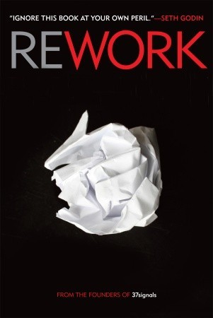

Hola,
Soy un programador, emprendedor y escritor con una única misión: transformar la educación para que más personas aprovechen al máximo su potencial y recuperen el interés por el aprendizaje que perdieron en el colegio y la universidad.
Desafortunadamente el modelo de educación tradicional es ineficiente y anticuado para las necesidades del mundo actual. Se basa en motivaciones externas (notas y títulos) que corrompen el aprendizaje y está diseñado para generar trabajadores reemplazables, obedientes y productivos.
Es hora de repensar el modelo desde su raíz. Aceptar que todos somos diferentes y aprendemos a diferentes ritmos. Que en vez de más información, necesitamos es más inspiración.
Un poco más acerca de mi
La programación es mi pasión creativa. He programado por casi 20 años y espero poder seguirlo haciéndolo por el resto de mi vida. Descubrí la lectura y la escritura hace relativamente poco y, aunque he leído algunos libros sobre cómo escribir mejor, mi estrategia es muy simple: escribir todos los días.
De lo que más me siento orgulloso
En 2003, junto a tres compañeros de la universidad, fundé elibom.com, una empresa que hoy se dedica al envío de alertas y notificaciones vía mensajes de texto SMS con presencia en Colombia y Perú. Ha sido increíble ayudar a construir una empresa de cero a varios millones de dólares en ventas que ha superado la prueba del tiempo.
Hoy elibom.com cuenta con un increíble equipo de trabajo y, aunque no estoy en el día a día, sigue siendo una parte fundamental de mi vida. Cuando elibom cumplió 10 años escribí un post que puedes encontrar en el siguiente enlace.
Mis mayores deseos son
- Que las personas dejen de ver el aprendizaje como algo para sus primeros X años de vida. El aprendizaje debe ser contínuo y para toda la vida.
- Que no sea un título lo que motive a las nuevas generaciones, ni lo que las empresas valoren.
- Que las personas estén constantemente creando, sin miedo a fallar.
Mis libros favoritos
En 2011 mis padres y hermanos me regalaron un Kindle de cumpleaños. Acepto que hasta ese momento nunca había terminado de leerme un libro completo. Pero desde entonces he leído más de 60 libros (eso es más de un libro por mes en promedio), algunos los he repetido varias veces y la lectura es ahora parte de mi vida. Estos son algunos de mis favoritos, aunque fue una decisión bastante difícil, de todos he aprendido algo.
¿Por qué dejamos de preguntarnos? ¿Qué mata la curiosidad que teníamos de niños? A more beautiful question revive la importancia de las preguntas en nuestras vidas y nos inspira a recuperar la curiosidad. Al fin y al cabo, las personas que cambian el mundo no son las que se adaptan al sistema, son precisamente las que no se conforman y siempre ven una mejor forma de hacer las cosas.
 Muchos me preguntan ¿por qué no vamos a enviar a nuestra hija a un colegio? Pero la pregunta que se deberían estar haciendo es ¿por qué ellos los están enviando al colegio y a la universidad? Hacking your education explica el problema de la educación tradicional y es un excelente recurso para aquellos que están buscando una alternativa al sistema tradicional de educación.
Muchos me preguntan ¿por qué no vamos a enviar a nuestra hija a un colegio? Pero la pregunta que se deberían estar haciendo es ¿por qué ellos los están enviando al colegio y a la universidad? Hacking your education explica el problema de la educación tradicional y es un excelente recurso para aquellos que están buscando una alternativa al sistema tradicional de educación.
El reto, después de que uno se siente cómodo con un lenguaje de programación, no es escribir el código, es hacerlo legible para que sea fácil de mantener en 6 meses o en 1 año. Clean Code cambió la forma en que escribo el código en todos los lenguajes, el cuidado que tengo sobre cada línea, cada nombre de variable, cada método. Lo único es que los ejemplos, y el libro en general, está muy enfocado en Java. Pero la mayoría de ideas aplican para todos los lenguajes.
Los autores de este libro son los creadores de Basecamp, una empresa que vende millones de dólares al año. Uno de sus autores, David Heinemeier Hansson (conocido como DHH), es el creador de Ruby on Rails. Pero lo realmente valioso de Rework es aprender cómo lograron construir una empresa exitosa desafiando las reglas convencionales que enseñan en las universidades. Este libro se lo recomiendo a cualquier persona que esté pensando en crear una empresa.
Preguntas que me hago constantemente
- ¿Qué estoy suponiendo en mis argumentos? Nuestro cerebro está diseñado para rellenar información. Recuerda que correlación no implica causación.
- ¿De qué me estoy auto-justificando? Es dificil desafiar nuestras propias posiciones. Pero eso nos hace mucho más objetivos.
- ¿Qué creencia estoy aceptando sin analizarla? Desde pequeños nos programan con creencias que no tienen justificaciones razonables, pero que aceptamos sin discusión. Que lo digan en la televisión no significa que sea verdad ;)
Estoy trabajando en ...
Una alternativa a la universidad para los que quieren convertirse en desarrolladores Web, ya sea para encontrar un mejor empleo o crear sus propios productos digitales. Make it Real es una plataforma de aprendizaje basada en la filosofía de aprender haciendo, con mentores online, y una comunidad de alumnos que comparten el mismo objetivo.